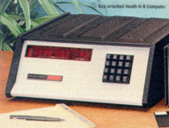

visitors since 4-March-2002
|
An H8 for the Rest of Us! |
Site last updated |
|
8-May-2003 |
|
|

Welcome! I built my first H8 system — a hardware unit like the one to the right — sometime in late 1979. It eventually had 56K of RAM, three double-sided disk drives, an H-19 terminal and a Xerox Diablo daisy-wheel printer. The system lasted some ten or eleven years before the H8 "blew smoke" and died. I built my second H8, this one a software emulation, the subject of this web site, starting in early 2001. I expect a bit more than eleven years of life from this H8! When I started this project I had a set of goals:
The overall goal was that, with few limitations, a program running inside the H8 emulator would not know the difference between the emulator and a real H8 / H-17 / H-19 environment. These goals have been met and, in many ways, surpassed. For example, I didn't expect to be able to run the disk diagnostic program, TEST17, but in fact it runs great and gives good (though pointless) results. My other, personal, goal was to teach myself Macintosh programming. I'd written code for the Apple IIgs and was very familiar with the concepts. But there are many differences; in fact, the Mac toolbox interface is, in many ways, much more basic and crude than that in GS/OS. Regardless, the H8 emulator is not your typical Macintosh program, and I think that I've squeezed about all the Macintosh programming knowledge I'm going to squeeze out of this particular project. The project is, for all intents and purposes, complete with release 5.3.2 of the emulator. Any remaining bugs will be fixed as they are found, but the feature set is complete. More than complete, if you consider the user convenience features added in the 5.2 release series. If I go any further along these lines, it will no longer be an H8! If there is any more H8 software I should be carrying in the HDOS Utilities subpage, please let me know what it is and where I might get it. I've reorganized the site a bit and have room for more software. And if I can swing it, I'd like to get the HDOS source code and distribute it through this site. Watch this space. Anyway, please have a look around the site — I'd recommend especially the design and help sections. And why not download the emulator and give it a try! As you will see on the release and legal pages, the emulator is being distributed as freeware. Thanks for visiting, and Enjoy! Dave Shaw
|
visitors since 4-March-2002 |
Counter provided by |